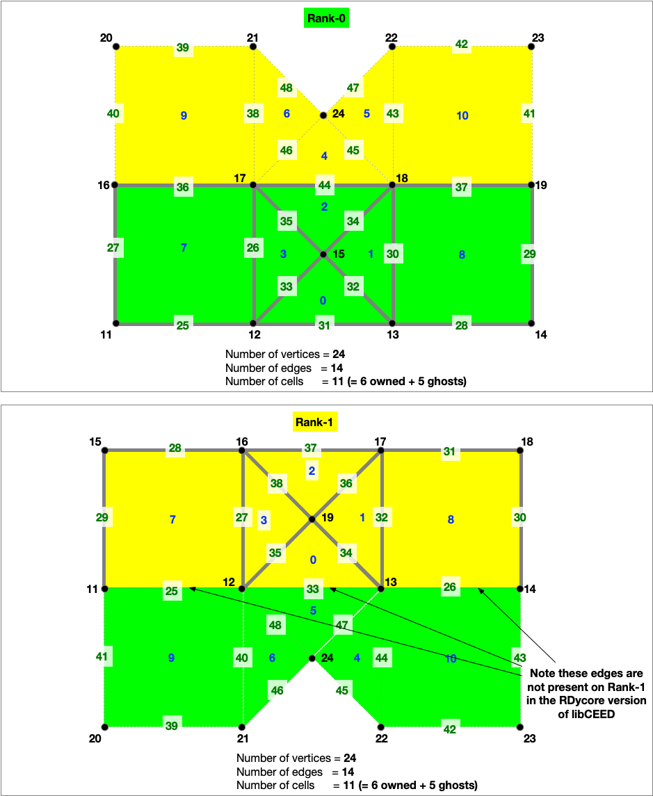

Mesh
Here we describe the two mesh formarts that we use in RDycore. Additionally, we explain how the mesh information is internally saved in RDycore. The two mesh formats that we use are:
- Exodus II
- DMPlex HDF5 v3.0.0
RDycore has been tested for meshes that include triangular, quadrilateral, or both triangular and quadrilateral cells. The vertices of cells have coordinates in 3D.
Exodus II Mesh Format
The Exodus II mesh format (.exo) uses 1-based indices.
Triangular elements
Triangular
cell
v3
/ \
/ \
e5 e4
/ c1 \
/ \
v1 --- e3 --- v2
- The
elem_typeof the triangular cell,c1, isTRI3 - It comprises of three vertices (i.e.
v1,v2,v3) - It has five edges sets. The first two edge sets form a plane and the remaining three edge sets are lines as follows:
e1: Comprises of the plane formed byv1,v2,v3(not shown above)e2: Comprises of the plane formed byv1,v3,v2(not shown above)e3: Line fromv1tov2e4: Line fromv2tov3e5: Line fromv3tov1
Quadrilateral elements
Quadrilateral
cell
v4 --- e5 --- v3
| |
| |
e6 c1 e4
| |
| |
v1 --- e3 --- v2
- The
elem_typeof the quadrilateral cell,c1, isSHELL4 - It comprises of four vertices (i.e.
v1,v2,v3,v4) - It has six edges sets. The first two edge sets form a plane and the remaining four edge sets are lines as follows:
e1: Comprises of the plane formed byv1,v2,v3,v4(not shown above)e2: Comprises of the plane formed byv1,v4,v3,v2(not shown above)e3: Line fromv1tov2e4: Line fromv2tov3e5: Line fromv3tov4e6: Line fromv4tov1
Example mesh with mixed element types
Above is an example of mesh that comprises of:
- 12 cells with 4 quadrilaterals and 8 triangles
- 14 vertices
- Five edge sidesets
- Right boundary
- Left boundary
- Top boundary
- Bottom boundary
- River
The .exo mesh file uses NetCDF. The cells corresponding to the two element types
(i.e. quadrilaterals and triangles) must be saved as two different data fields
in the .exo file (e.g connect1 for quadrilateral and connect2 for triangles.
```:bash # quadrilateral cells connect1 = 1, 2, 6, 5, 3, 4, 8, 7, 5, 6, 10, 9, 7, 8, 12, 11 ;
triangular cells
connect2 =
2, 3, 13,
3, 7, 13,
7, 6, 13,
6, 2, 13,
6, 7, 14,
7, 11, 14,
11, 10, 14,
10, 6, 14 ;
Each sideset is defined via two data fields:
- `elem_ss<ID>`: Corresponds to the cell (or element) ID
- `side_ss<ID>`: Correponds to the edge sideset
The five edge sets for the above mesh are defined as
```text
# right boundary
elem_ss1 = 2, 4 ;
side_ss1 = 4, 4 ;
# left boundary
elem_ss2 = 1, 3 ;
side_ss2 = 6, 6 ;
# top boundary
elem_ss3 = 3, 11, 4 ;
side_ss3 = 5, 3, 5 ;
# bottom boundary
elem_ss4 = 1, 5, 2 ;
side_ss4 = 3, 3, 3 ;
# river
elem_ss5 = 4, 9, 9, 8, 8 ;
side_ss5 = 3, 4, 5, 5, 4 ;
```
## DMPlex HDF5 v3.0.0
Before understanding the DMPlex's HDF5 storage version v3.0.0
(i.e. `-dm_plex_view_hdf5_storage_version 3.0.0`), it is important to understand
how DMPlex number mesh elements.
### DMPlex mesh numbering for a serial run
DMPlex uses 0-based numbering. The mesh elements are numbered in the following order:
1. Cells
2. Vertices
3. Edges.
DMPlex gives the following ID:
- Cell ID: `0`-`11`
- Vertex ID: `12` to `25`
- Edge ID: `26` to `50`

```text
#
# ncells = Number of cells
# = nquad (number of quadrilaterals) + ntri (number of trinagles)
# = 4 + 8 = 12
#
# nvertices = Number of vertices = 14
#
# nedges = Number of unique edges
# = nedges_internal (number of internal edges) + nedges_bnd (number of boundary edges)
# = 15 + 10 = 25
#
# ntotal = ncells + nvertices + nedges
# = 12 + 14 + 25 = 51
├── topologies (G)
├── Parallel Mesh (G) Attributes: (1) coordinateDMName (STRING), (2) coordinatesName (STRING)
├── dms (G)
| ├── coordinateDM (G)
| |
| ├── order (D, INTEGER, size = ntotal)
| |
| ├── section (G) Attributes: (1) hasConstraints (INTEGER) (2) includesConstraint (INTEGER), (3) numFields (INTEGER)
| | |
| | ├── atlasDof (D, INTEGER, size = ntotal) [zeros(0:ncells,1); 3*ones(nvertices,1); zeros(nedges,1)]
| | |
| | ├── atlasOff (D, INTEGER, size = ntotal) [zeros(0:ncells,1); [0:3:(nvertices-1)*3]; ones(nedges,1)*nvertices*3]
| | |
| | ├── field0 (G) Attributes: (1) fieldComponents (INTEGER) (2) fieldName (STRING) (3) hasConstraints (INTEGER) (4) includesConstraint (INTEGER)
| | |
| | ├── atlasDof (D, INTEGER, size = ntotal) [zeros(0:ncells,1); 3*ones(nvertices,1); zeros(nedges,1)]
| | ├── atlasOff (D, INTEGER, size = ntotal) [zeros(0:ncells,1); [0:3:(nvertices-1)*3]; ones(nedges,1)*nvertices*3]
| | |
| | ├── component0 (G) Attribute (1) componentName (STRING)
| | ├── component1 (G) Attribute (1) componentName (STRING)
| | ├── component2 (G) Attribute (1) componentName (STRING)
| |
| ├── vecs (G)
| ├── coordinates (G) Attribute (1) blockSize
| |
| ├── coordinates (D, FLOAT, size = 3 * nvertices) Note: Each vertex has 3 coordinates in x,y,z
|
├── labels
| ├── Cell Sets (G)
| | ├── 1 (G)
| | ├── indicies (D, INTEGER, size = ncells) [0:ncells-1]
| |
| ├── Face Sets (G, OPTIONAL)
| | ├── 1 (G)
| | | ├── indicies (D, INTEGER) (e.g. [31 37] for right boundary)
| | |
| | ├── 2 (G)
| | ├── indicies (D, INTEGER) (e.g. [28 36] for left boundary)
| | |
| | ├── 3 (G)
| | ├── indicies (D, INTEGER) (e.g. [35 38 49] for top boundary)
| | |
| | ├── 4 (G)
| | ├── indicies (D, INTEGER) (e.g. [26 30 40] for bottom boundary)
| | |
| | ├── 5 (G)
| | ├── indicies (D, INTEGER) (e.g. [32 42 45 46 47] for river)
| |
| ├── boundary_edges (G)
| | ├── 1 (G)
| | ├── indicies (D, INTEGER, size = nedges_bnd)
| |
| ├── celltype (G)
| ├── 0 (G)
| | ├── indicies (D, INTEGER, size = num_verrtices) [ncells:ncells+nvertices-1]
| |
| ├── 1 (G)
| | ├── indicies (D, INTEGER, size = num_edges) [ncells+nvertices:ncells+nvertices+nedges-1]
| |
| ├── 3 (G, OPTIONAL, TRIANGULAR)
| | ├── indicies (D, INTEGER, size = num_tri) [nquads:nquads+ntri-1]
| |
| ├── 4 (G, OPTIONAL, QUADRILATERALS)
| ├── indicies (D, INTEGER, size = num_quads) [0:nquads]
|
├── topology (G) Attributes: (1) cell_dim (INTEGER) (2) depth (INTEGER)
|
├── permutation (D, INTEGER, size = 3)
|
├── strata (G)
├── 0 (G)
| ├── cone_sizes (D, INTEGER, size = num_vertices)
| ├── cones (D, INTEGER)
| ├── orientation (D, INTEGER)
|
├── 1 (G)
| ├── cone_sizes (D, INTEGER, size = num_edges)
| ├── cones (D, INTEGER, size = 2 * num_edges)
| ├── orientation (D, INTEGER, size = 2 * num_edges)
|
├── 2 (G)
├── cone_sizes (D, INTEGER, size = ncells)
├── cones (D, INTEGER, size = 4 * nquads + 3 * ntri)
├── orientation (D, INTEGER, size = 4 * nquads + 3 * ntri)
Domain Decomposition
Below is the decomposition of the example mesh with mixed element types across two MPI ranks.

The SWE physics in RDycore is currently implmented in two versions:
- A PETSc only implementation without support for libCEED
- An implementation with support for libCEED
In the libCEED version of RDycore, the edges between an owned and ghost cell are only present on the rank with a lower ID.